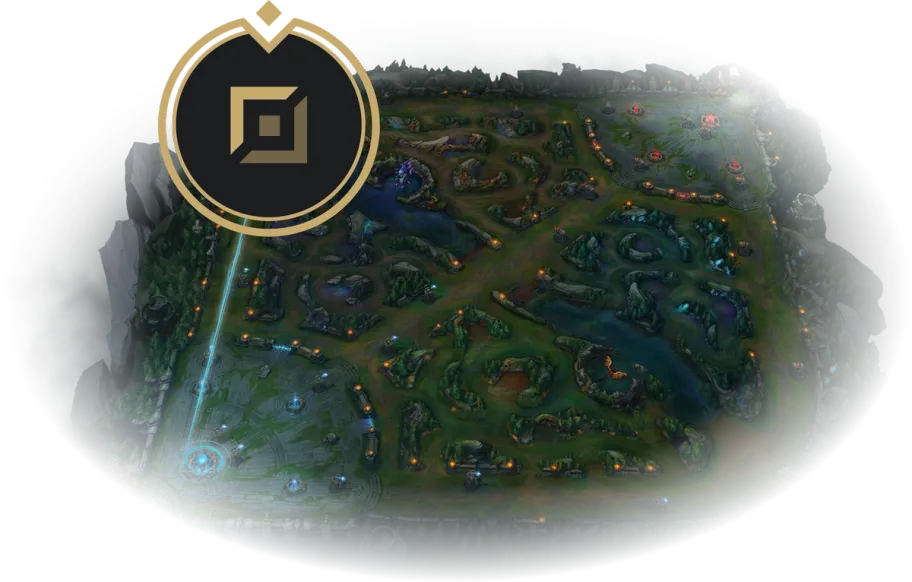

Rotas
As rotas são como as estradas principais do mapa de Summoner's Rift, o
campo de batalha do jogo. São três caminhos que ligam as bases das equipes. Cada caminho tem
suas próprias características e desafios.

Top Lane
É onde você encontra menos jogadores, então as batalhas são mais
isoladas. Se você gosta de lutar com poucas pessoas, essa é a sua rota. É também onde você pode
tentar empurrar a lane sozinho para ganhar vantagem.